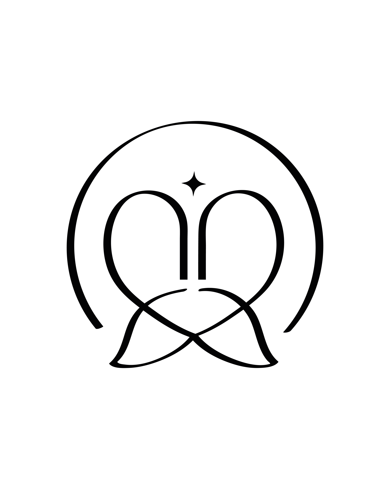

Dayane RodriguesOdontopediatra Agendar ConsultaSono trocado, gengiva inchada, muita baba… o nascimento dos dentes mexe com toda a casa. A Tia Day te mostra como aliviar o incômodo, higienizar do jeito certo e prevenir a cárie desde o primeiro dentinho.
Com a orientação certa, essa fase fica muito mais leve — e o seu bebê cresce com hábitos saudáveis e dentes protegidos desde o começo.
Acompanhamento da erupção e da saúde da boca.
Como e com o que limpar os primeiros dentes.
Orientação sobre hábitos e a cárie precoce.
O que ajuda (e o que evita) nessa fase.
Conversamos sobre a fase do bebê e o melhor horário.
Ambiente tranquilo, sem pressa, respeitando o pequeno.
Erupção, higiene, chupeta, mamadeira e alimentação.
Um roteiro claro para proteger os dentinhos em casa.
Especialista em Odontopediatria, a Dra. Dayane acompanha o nascimento dos primeiros dentinhos com carinho e ciência — orientando os pais para que essa fase seja tranquila.
Prevenção desde cedo é o melhor presente para o sorriso do seu filho. E tudo começa com hábitos simples, feitos do jeito certo.
"Estava perdida com a fase dos dentinhos e do sono. Saí da consulta com um passo a passo que mudou nossa rotina."
"Aprendi a higienizar do jeito certo e a lidar com a chupeta. Atenção e paciência do início ao fim."
"Comecei cedo por indicação e não me arrependo. Minha filha já tem uma relação linda com a dentista."
Geralmente por volta dos 6 meses, mas varia bastante de bebê para bebê. Atraso ou adiantamento costumam ser normais — na dúvida, vale avaliar.
Mordedores próprios e massagem na gengiva costumam ajudar. A Dra. orienta o que é seguro para a idade e o que evitar.
Sim! A higiene começa com o primeiro dentinho. Na consulta você aprende a técnica e o creme dental certos para a idade.
Usadas com orientação, dá para reduzir riscos como a cárie precoce e alterações na mordida. O acompanhamento ajuda a conduzir bem.
Clique em qualquer botão de WhatsApp desta página e fale com a nossa equipe. Rápido e sem compromisso.
Deixe essa fase mais leve e proteja o sorriso do seu bebê desde o início. Fale com a Tia Day.
Agendar pelo WhatsApp